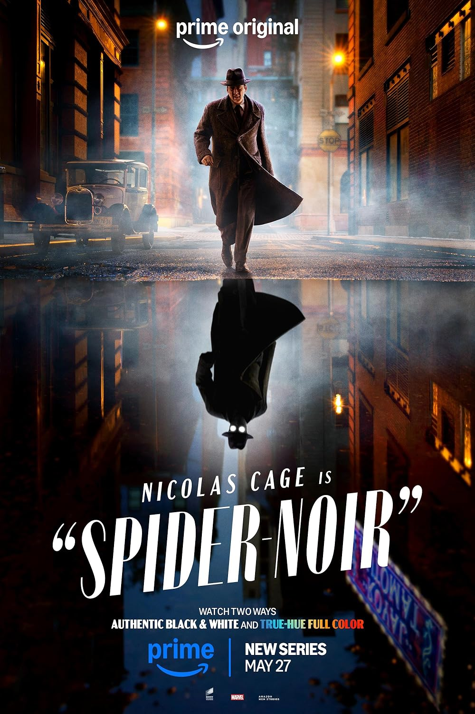

Spider-noir - Série da Prime Video

Ação | Drama | IMDb 7,7/10 | 2026 | 1 temporada
Sinopse: O detetive particular Ben Reilly é contratado para casos simples… até que gângsteres, monstros e uma misteriosa femme fatale tecem uma teia que o obriga a confrontar seu passado como o único super-herói de Nova York: O Spider.
| # | Episódio | Duração | Lançamento |
|---|---|---|---|
| 1 | Entre no meu escritório | 47 min | 26 de maio de 2026 |
| 2 | Pisando em ovos | 43 min | 26 de maio de 2026 |
| 3 | Falsidade | 47 min | 26 de maio de 2026 |
| 4 | Nunca repita o mesmo erro | 49 min | 26 de maio de 2026 |
| 5 | Traição | 50 min | 26 de maio de 2026 |
| 6 | Pesadelo na maca | 43 min | 26 de maio de 2026 |
| 7 | Herói de ninguém | 43 min | 26 de maio de 2026 |
| 8 | O homem mascarado | 48 min | 26 de maio de 2026 |
Assista no: